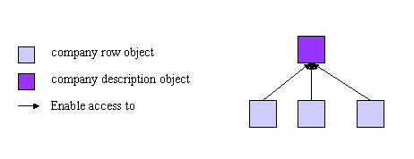
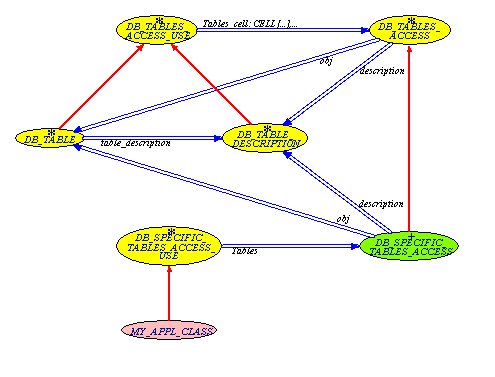

EiffelStore affords a context that optimizes and facilitates the use of the classes that maps your database content.
The main advantage of database-specific structures is the static checking: you can determine at compile-time the type of information you are accessing or modifying.
However, it can be more flexible to determine the type of data you are dealing with at run-time. This can be particularly useful for GUI applications, take a look at the DataView cluster.
Each data structure carries some meta-data about its type so that the run-time typing hazards can be avoided with assertions based on this meta-data.
The advantage of this system is two-fold:
You can choose to use compile-time type checking or not, depending on your own needs.
If you choose run-time type checking, assertions ensure that each object type is valid and prevent catcalls.
Let us see first what you can do with data structures and their context, then how it is implemented.
Database-specific classes and their context let you perform the following operations:
You can store table/view rows content into classes that have the table or view name: one database table/view row correspond to one Eiffel object. Each table attribute will correspond to a class attribute with the same name. set commands enable to change the object content to insert rows in the database or update rows. DB_SELECTION class can directly map database results into these objects, and you can directly create a table/view row from one object with the DB_STORE class. Take a look at the data-object coupling section.
[Note on the types and default values]
Each table/view storage structure inherits from the DB_TABLE abstract class. This enables to handle DB_TABLE objects as abstract database table/view structures.
You can then access or modify DB_TABLE attributes: instead of accessing attributes with their name, which implies that the object type is known at compile-time, attributes can then be accessed with a code.
tablerow: DB_TABLE
...
display_attribute (code: INTEGER) is
-- Display attribute with `code'.
do
io.putstring (tablerow.table_description.attribute (code).out)
end
Note: to access attributes data with code, you need to use the DB_TABLE_DESCRIPTION object associated to your DB_TABLE object.
While manipulating DB_TABLE objects, you can easily get:
Which database table/view the object references.
What are the types of its attributes.
Note: you also get objects metadata through the DB_TABLE_DESCRIPTION object associated to your DB_TABLE object.
Objects metadata used in assertions ensures objects type validity. To illustrates this, let's look at the contract form of a class that manipulates "abstract" table/view rows:
set_table_code (code: INTEGER)
-- Assign `code' to `tablecode'.
tablecode: INTEGER
-- Table code.
compute (tablerow: DB_TABLE)
-- Compute `tablerow'.
require
type_is_ok: tablerow.table_description.Table_code = tablecode
Basic database metadata is also available: the DB_SPECIFIC_TABLES_ACCESS_USE class (generated), stores INTEGER codes for each database table/view. These codes afford related table/view name and related new storing objects (i.e. that conforms to DB_TABLE class).
tables: DB_SPECIFIC_TABLES_ACCESS
...
new_object (code: INTEGER): DB_TABLE is
-- New object of table with `code'.
do
Result := tables.obj (code)
end
The DB_TABLE_DESCRIPTION class offers more features to get table row attributes as conveniently as possible:
The table/view row primary key value (ID)
The list of table/view row attributes
A selection of table/view row attributes
The list of table/view row attributes mapped to a function.
Printable attribute values (i.e. the associated STRING values)
Database-specific classes can be divided into 3 types:
Classes holding database table rows content (inheriting from DB_TABLE)
Classes describing database tables (inheriting from DB_TABLE_DESCRIPTION)
A class describing the database and giving access to the previous types of classes (inheriting from DB_TABLES_ACCESS)
One database table is hence associated to one table class and one description class. Both classes are closely interrelated to provide what the developer need. The table access classes describes the database tables and gives access to both table and description classes.
Each database-specific (generated) class inherits from an abstract class. These abstract classes gathers all the facilities that are not specific to your database, and so that can be inherited by all the database-specific classes.
Let us see abstract and database-specific classes relationship:
General and generated classes relationships
Yellow classes are abstract.
Green classes are database-specific.
Table classes, that inherit from DB_TABLE, and description classes, that inherit from DB_TABLE_DESCRIPTION, both deals with database tables. This section explains what are their own role and their relationship.
As seen in the previous section, table classes merely store table rows attribute values. Their objects can be considered as database table rows, or more precisely, database table rows on the Eiffel side. These classes inherit from DB_TABLE.
Each of these classes are associated to a description class.
Tip: Use table classes to carry data.
The description classes goal is 3-fold:
Getting meta-data about the table represented at run-time.
Getting table rows data dynamically.
These descriptions inherit from DB_TABLE_DESCRIPTION.
Since they only describes a table and provide tools, description objects can be unique. EiffelStore ensures their unicity for resources optimization.
Tip: Use description classes to access and modify data.
Each table class is associated to the description class corresponding to the same database table.
A table class object provides the associated table description:
row: DB_TABLE
description: DB_TABLE_DESCRIPTION
...
row := db_manager.database_result
description := row.table_description

table and description objects relationship
As seen in the previous section, to manipulate abstract table/view rows content, you have to use the description class. The following example shows how to output a table row ID value.
row: DB_TABLE
description: DB_TABLE_DESCRIPTION
...
-- Link description unique object to `row' content.
description := row.table_description
io.putstring (description.attribute (description.id_name) + ": ")
io.putstring (description.attribute (description.id_code).out)
As descriptions are unique, this means that description objects are also associated to a specific table object to deal with it (i.e. access or modify its content). Actually, the table_description feature associates the description with the current object and then returns this description.
Note: The table_description feature is still a query as the association part should not be visible at the interface level.
On the whole, you have to pay attention to always execute table_description on your table/view row to get the appropriate description.
Table access classes provide facilities to manage table row and table description objects. They also give basic database table meta-data.
The following figure shows table access classes and their relations.
Yellow classes are EiffelStore classes
Green class is generated
Pink class is an application class

Table access classes BON diagram

Relationship between the tables access object, description and table objects
The DB_SPECIFIC_TABLES_ACCESS class stores the unique table description object. It also provides the following facilities:
Every database table code
Table descriptions from a table code
Sample table class objects from a table code
Table names from a table code
Note: database table codes given in the class match the table codes provided by DB_TABLE_DESCRIPTION.
The DB_TABLES_ACCESS class provides an interface for the DB_SPECIFIC_TABLES_ACCESS class which is non-specific to the database. This can be used by non database-specific code (for instance the DataView cluster) to access database tables.
Unique table description objects and table codes are of course not directly available from this class, but the following features are still available:
Table descriptions from a table code
Sample table class objects from a table code
Table names from a table code
The DB_SPECIFIC_TABLES_ACCESS object can be accessed as a kind of "global variable" by any class which inherits from DB_SPECIFIC_TABLES_ACCESS_USE. This class also ensures DB_SPECIFIC_TABLES_ACCESS object unicity.
The DB_TABLES_ACCESS_USE class affords the same possibility but with no reference to the DB_SPECIFIC_TABLES_ACCESS object. The unique DB_SPECIFIC_TABLES_ACCESS should be set to this class as of type DB_TABLES_ACCESS.